LabVIEW VI Comparison Report
07:03:32 10/29/2026
First VI: /workspace-base/src/user.lib/_NEVSTOP/Communicable State Machine(CSM)/_Support/GlobalEvent/LogFilter/CheckVIs/Periodic Log Filter Check.viSecond VI: /workspace/src/user.lib/_NEVSTOP/Communicable State Machine(CSM)/_Support/GlobalEvent/LogFilter/CheckVIs/Periodic Log Filter Check.vi
| Front Panel Overview | ||

|
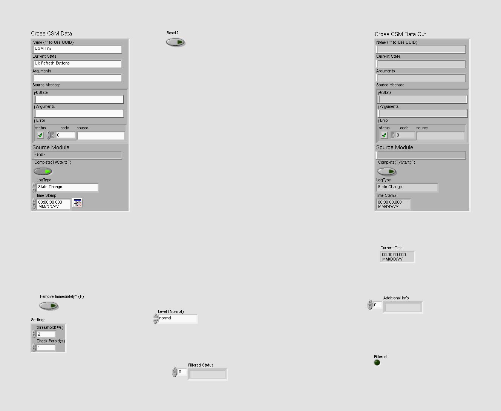 | |
| Block Diagram Overview | ||
|
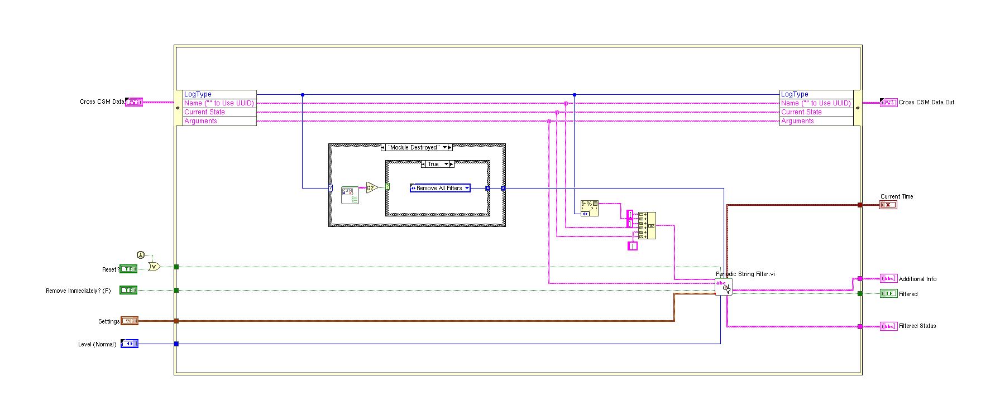 |
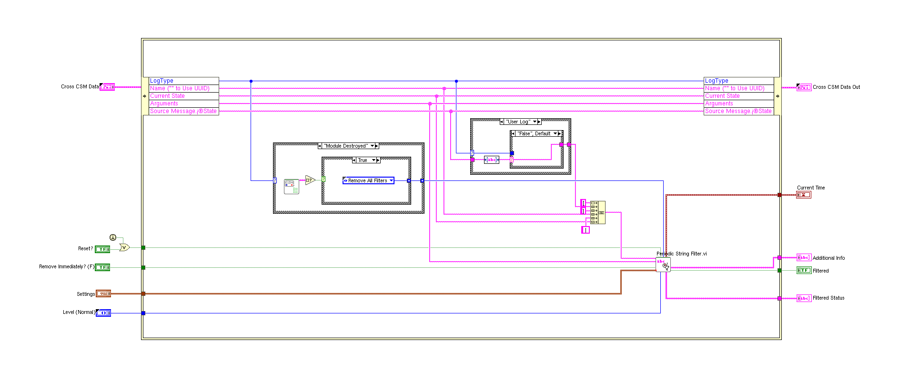 |
- Front Panel
- Front Panel Position/Size
- Block Diagram Functional
- Block Diagram Cosmetic
- VI Attribute
Detailed Information
1. Block Diagram objects
| /workspace-base/src/user.lib/_NEVSTOP/Communicable State Machine(CSM)/_Support/GlobalEvent/LogFilter/CheckVIs/Periodic Log Filter Check.vi | /workspace/src/user.lib/_NEVSTOP/Communicable State Machine(CSM)/_Support/GlobalEvent/LogFilter/CheckVIs/Periodic Log Filter Check.vi | |
|
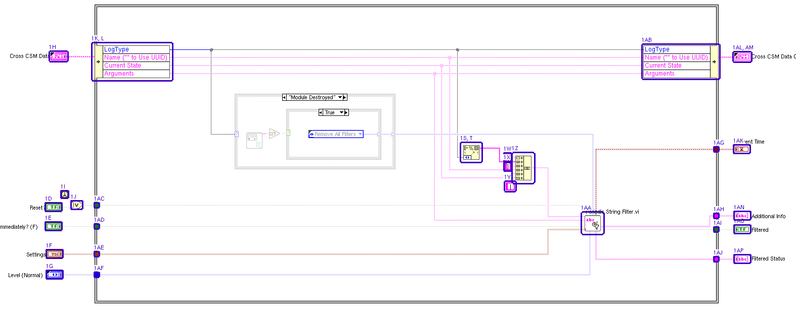 |
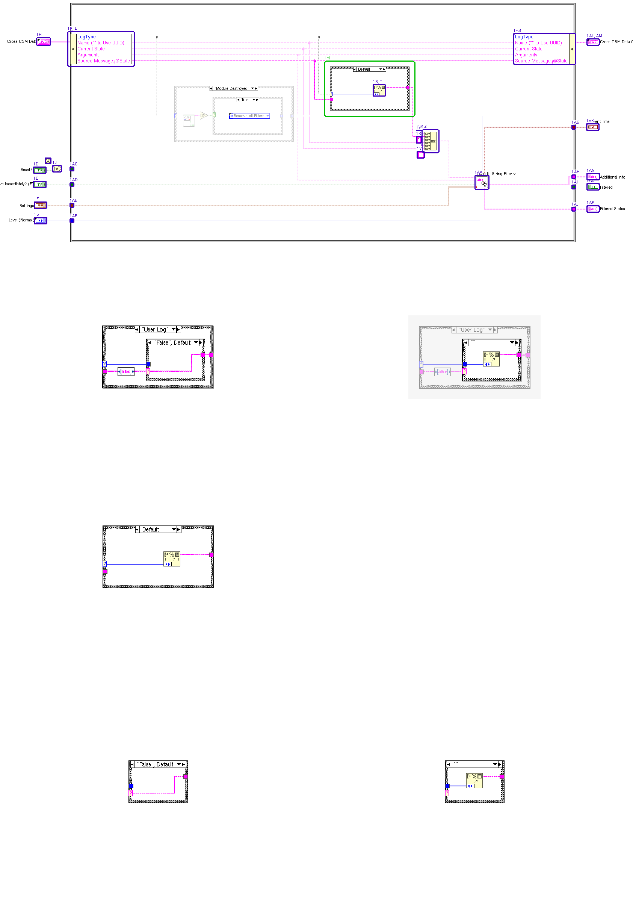 |
- Name Label - moved : changed from "(276,878)" to "(291,918)"
- Name Label - moved : changed from "(334,974)" to "(341,1014)"
- Name Label - moved : changed from "(377,840)" to "(373,880)"
- Front Panel Terminal "Reset?" - moved : changed from "(410,838)" to "(410,881)"
- Front Panel Terminal "Remove Immediately? (F)" - moved : changed from "(410,876)" to "(410,919)"
- Front Panel Terminal "Settings" - moved : changed from "(412,931)" to "(412,974)"
- Front Panel Terminal "Level (Normal)" - moved : changed from "(412,972)" to "(412,1015)"
- Front Panel Terminal "Cross CSM Data" - numeric representation : changed from "'Cross CSM Data': typedef 'Communicable State Machine.lvlib:_CSM_GlobalLog_MSG.ctl'\ncluster of 8 elements \n 'Name ("" to Use UUID)': string \n 'Current State': string \n 'Arguments': string \n 'Source Message': typedef 'Communicable State Machi" to "'Cross CSM Data': typedef 'Communicable State Machine.lvlib:_CSM_GlobalLog_MSG.ctl'\ncluster of 8 elements \n 'Name ("" to Use UUID)': string \n 'Current State': string \n 'Arguments': string \n 'Source Message': typedef 'Communicable State Machi"
- First Call? - moved : changed from "(441,814)" to "(441,857)"
- Or - moved : changed from "(461,834)" to "(461,877)"
- Unbundle / Bundle Elements - number of terminals : changed from "5" to "6"
- Unbundle / Bundle Elements - moved : changed from "(507,525)" to "(507,526)"
- Case Structure - added at (1198,613)
- SubVI "CSM Shared.lvlib:Trim Single-line Text.vi" - added at (1227,692)
- Case Structure - added at (1281,638)
- Format Into String - added at (1321,662)
- Tunnel - added at (1281,682)
- Tunnel - added at (1385,664)
- Format Into String - diagram scope : changed
- Format Into String - moved : changed from "(1236,723)" to "(1314,662)"
- Tunnel - added at (1198,696)
- Tunnel - added at (1401,664)
- String Constant "string" - moved : changed from "(1318,740)" to "(1429,783)"
- String Constant "string" - moved : changed from "(1318,757)" to "(1429,800)"
- String Constant "string" - moved : changed from "(1320,797)" to "(1431,840)"
- Concatenate Strings - moved : changed from "(1339,744)" to "(1450,787)"
- SubVI "Communicable State Machine.lvlib:Periodic String Filter.vi" - moved : changed from "(1476,862)" to "(1587,905)"
- Unbundle / Bundle Elements - moved : changed from "(1592,525)" to "(1688,526)"
- In Place Element Structure Tunnel - moved : changed from "(507,838)" to "(507,881)"
- In Place Element Structure Tunnel - moved : changed from "(507,880)" to "(507,923)"
- In Place Element Structure Tunnel - moved : changed from "(507,935)" to "(507,978)"
- In Place Element Structure Tunnel - moved : changed from "(507,976)" to "(507,1019)"
- In Place Element Structure Tunnel - moved : changed from "(1732,727)" to "(1843,770)"
- In Place Element Structure Tunnel - moved : changed from "(1732,859)" to "(1843,902)"
- In Place Element Structure Tunnel - moved : changed from "(1732,886)" to "(1843,929)"
- In Place Element Structure Tunnel - moved : changed from "(1732,945)" to "(1843,988)"
- Front Panel Terminal "Current Time" - moved : changed from "(1771,723)" to "(1882,766)"
- Front Panel Terminal "Cross CSM Data Out" - numeric representation : changed from "'Cross CSM Data Out': typedef 'Communicable State Machine.lvlib:_CSM_GlobalLog_MSG.ctl'\ncluster of 8 elements \n 'Name ("" to Use UUID)': string \n 'Current State': string \n 'Arguments': string \n 'Source Message': typedef 'Communicable State M" to "'Cross CSM Data Out': typedef 'Communicable State Machine.lvlib:_CSM_GlobalLog_MSG.ctl'\ncluster of 8 elements \n 'Name ("" to Use UUID)': string \n 'Current State': string \n 'Arguments': string \n 'Source Message': typedef 'Communicable State M"
- Front Panel Terminal "Cross CSM Data Out" - moved : changed from "(1772,540)" to "(1883,540)"
- Front Panel Terminal "Additional Info" - moved : changed from "(1772,855)" to "(1883,898)"
- Front Panel Terminal "Filtered" - moved : changed from "(1772,882)" to "(1883,925)"
- Front Panel Terminal "Filtered Status" - moved : changed from "(1772,941)" to "(1883,984)"
- wiring changes
2. Block Diagram objects
| /workspace-base/src/user.lib/_NEVSTOP/Communicable State Machine(CSM)/_Support/GlobalEvent/LogFilter/CheckVIs/Periodic Log Filter Check.vi | /workspace/src/user.lib/_NEVSTOP/Communicable State Machine(CSM)/_Support/GlobalEvent/LogFilter/CheckVIs/Periodic Log Filter Check.vi | |
|
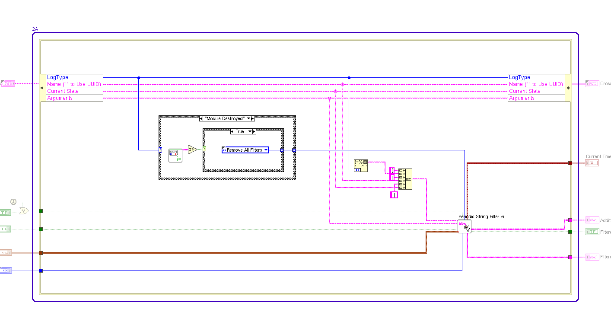 |
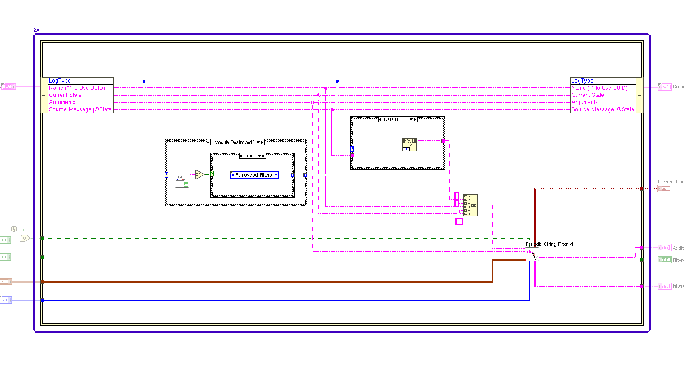 |
- In Place Element Structure - resized : changed from "1234*593" to "1345*636"
3. Block Diagram objects
| /workspace-base/src/user.lib/_NEVSTOP/Communicable State Machine(CSM)/_Support/GlobalEvent/LogFilter/CheckVIs/Periodic Log Filter Check.vi | /workspace/src/user.lib/_NEVSTOP/Communicable State Machine(CSM)/_Support/GlobalEvent/LogFilter/CheckVIs/Periodic Log Filter Check.vi | |
|
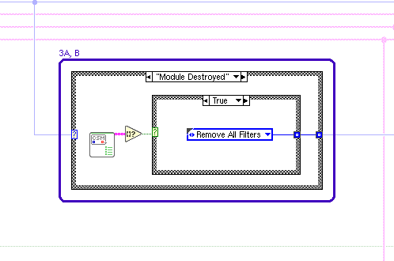 |
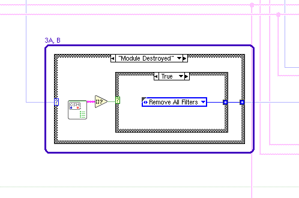 |
- Case Structure - data type : changed
- Case Structure - moved : changed from "(784,621)" to "(784,664)"
4. Block Diagram objects
| /workspace-base/src/user.lib/_NEVSTOP/Communicable State Machine(CSM)/_Support/GlobalEvent/LogFilter/CheckVIs/Periodic Log Filter Check.vi | /workspace/src/user.lib/_NEVSTOP/Communicable State Machine(CSM)/_Support/GlobalEvent/LogFilter/CheckVIs/Periodic Log Filter Check.vi | |
|
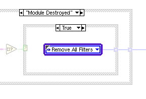 |
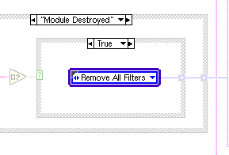 |
- Typedef Corner - moved : changed from "(930,693)" to "(930,736)"
5. Front Panel - Type Definition
| /workspace-base/src/user.lib/_NEVSTOP/Communicable State Machine(CSM)/_Support/GlobalEvent/LogFilter/CheckVIs/Periodic Log Filter Check.vi | /workspace/src/user.lib/_NEVSTOP/Communicable State Machine(CSM)/_Support/GlobalEvent/LogFilter/CheckVIs/Periodic Log Filter Check.vi | |
|
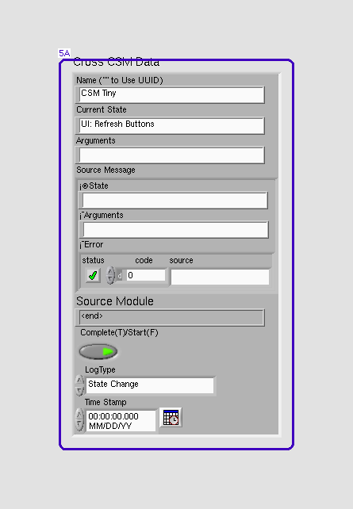 |

|
- Enum - number of text items : changed from "12" to "14"
6. Front Panel - Type Definition
| /workspace-base/src/user.lib/_NEVSTOP/Communicable State Machine(CSM)/_Support/GlobalEvent/LogFilter/CheckVIs/Periodic Log Filter Check.vi | /workspace/src/user.lib/_NEVSTOP/Communicable State Machine(CSM)/_Support/GlobalEvent/LogFilter/CheckVIs/Periodic Log Filter Check.vi | |

|
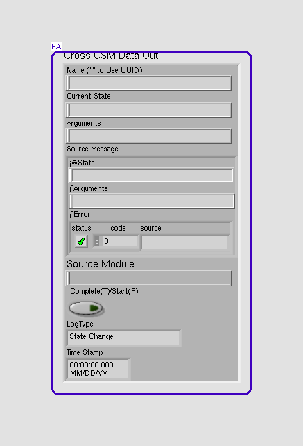 |
- Enum - number of text items : changed from "12" to "14"